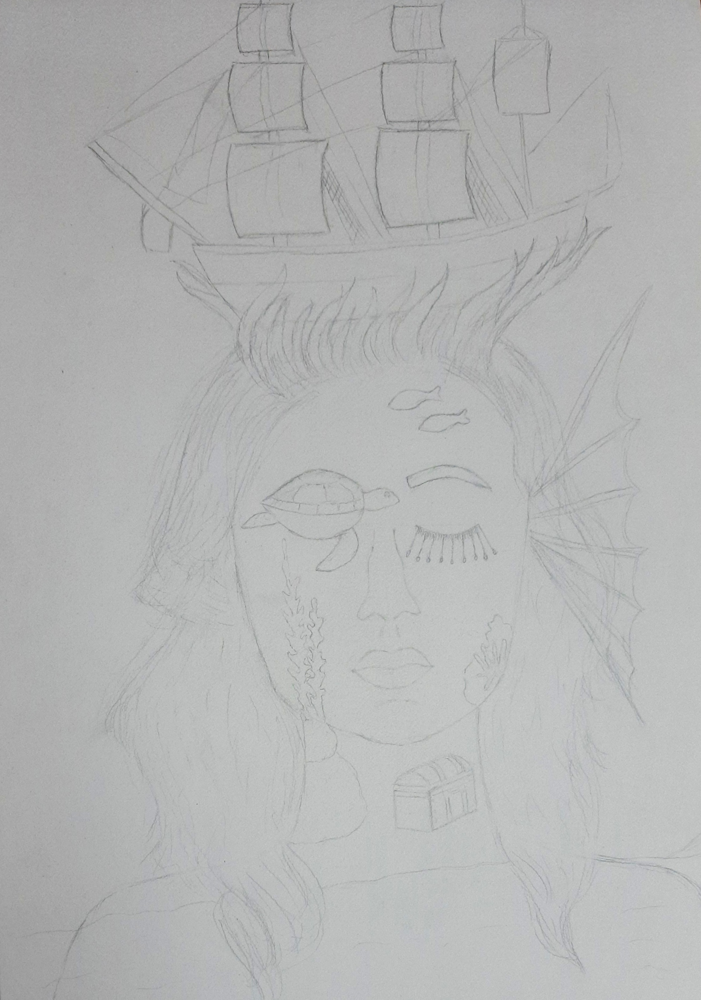
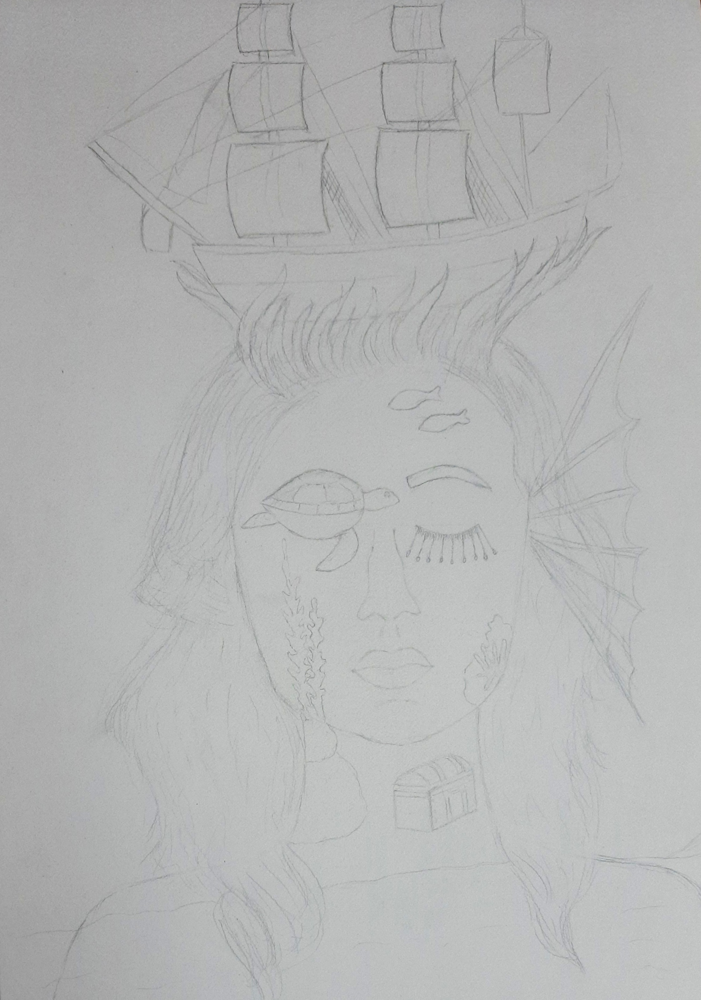
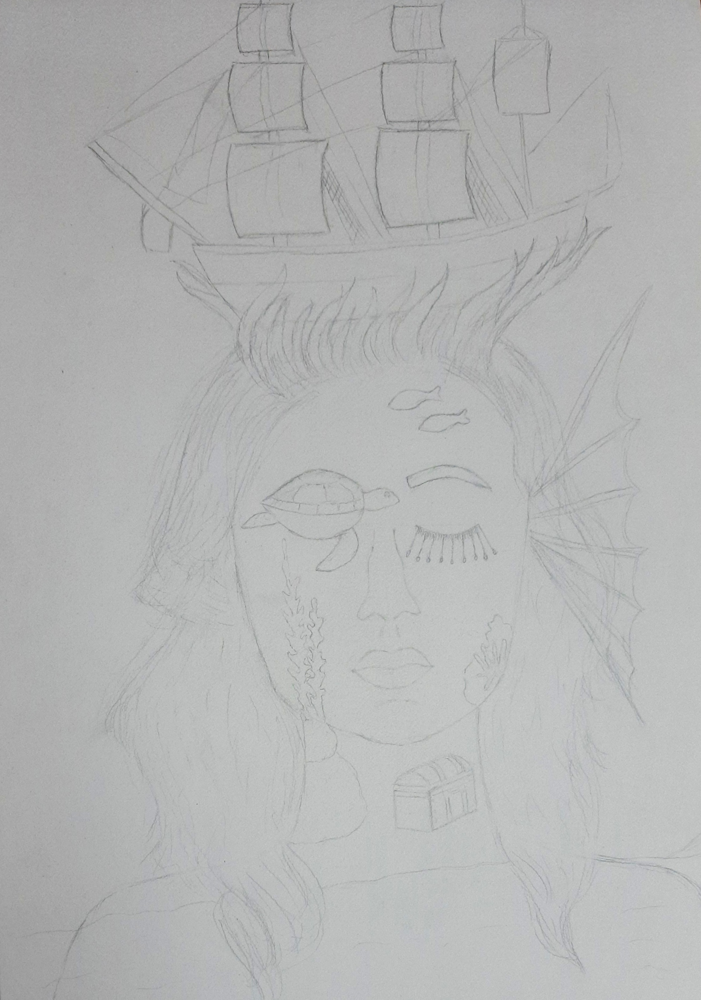

For this assignment, we had to make a surrealist portrait of ourselves using any medium of our choice. I chose to us watercolors for this and used a compliemtary color scheme of oranges, blues (and other colors such as brown that are formed by mixing them).
Steps
Step 1 : First, I googled surrealist portraits to get inspiration. After getting 3 ideas, I sketched them down. The first idea was animal themed, the second one was ocean themed and the third one was clockwork themed. I decided to do either my front profile or side since I found the 3/4 profile too challenging. I then took some of my pictures as a reference to draw myself in the sketch. Since I found it extremely hard to draw both eyes symetrically, all three of my ideas had only eye properly shown.
Step 2 : Although the decision was hard, I picked my second sketch as my final one. I started drawing the face and the ship before the hair. I added some more elements such as the aquatic webbed ear and the extra long eyelashes with designs at the end. I also switched the side that the turtle and fish were on since I found the turtle more convenient to draw that way and then wanted the fish to also have enough space.

Step 3 : I then started by painting the face with a base coat. Then I went over it and added the shadows (by looking at my reference picture). After that I painted all the other details on the face. Used a different blue to paint my eyebrow and eyelases and then later use for my hair.
Step 4 : I added a base coat for the hair and after that went over it in a different blue color to the one I used on the face. I created the texture of a hair by painting one single hair at a time at certain places. I also painted the boat and added light and shadows to the same areas as the ones on the face.
Step 5 : Finally I only had to paint the sails and my clothes. Since I was using a complimentary color scheme and most of the face and hair mainly used blue, I used orange for the clothes. I also used the splattering paint technique all around my face so it looked like orange rain.
Reflection
Something that turned out well was the details on the face and the facial features. The facial features such as the face shape, chip, lips and nose look exactly like mine that people have recognized that I drew myself without being told. Something I can improve on next time is using a reference for the shoulders, they look extremely abnormal and are not proportionate to the size of the face. I faced failure while painting my base coat of the face. It turned out extremely blotchy and uneven. I dealt with this by persevering and using tissue paper dipped it water to remove the areas with too much color. Although this took long, eventually I ended up getting a even base.
.png)


 
